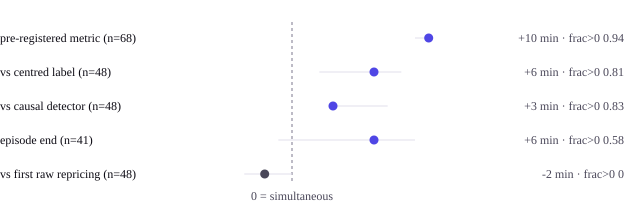
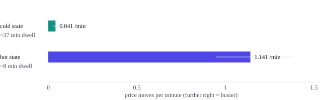
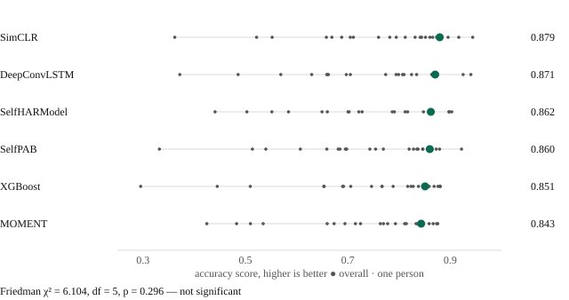
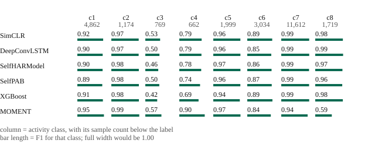

Research
Two theses. Both are strongest where they report a result that went against me, so that is where these summaries start.
Start here
The whole thing, in five sentences
A prediction market is a market where you buy a contract that pays $1 if some event happens and nothing if it does not, so a contract trading at 63¢ means the crowd thinks there is roughly a 63% chance — the price is the forecast. I collected these markets moving, second by second, and asked a single question: does a market have a hidden mood that turns busy shortly before its price starts moving, or is it simply that price moves cause more price moves? If the first were true you could see activity coming, which would be useful and slightly surprising. I found the second: the model that assumes a hidden mood detects busy spells but never anticipates them, and a model where each price move simply makes the next one more likely predicts better. Along the way the markets did something I did not expect — as a market approaches its deadline it goes quieter, not busier.
Everything below is that story in more detail. Terms are defined where they first appear, and collected in the glossary.
MSc thesis · UCL · in write-up, submission Sep 2026
Latent Dynamics of Prediction-Market Price Paths
The raw material is the repricing event — a moment when a market's price actually moves. Not what the price is, but when it changes.
What I built
A hierarchical point-process model of market activity, and the inference machinery to fit it. The likelihood runs through a forward algorithm that had no automatic-differentiation gradient in this codebase, which put the usual gradient-based samplers out of reach — so I wrote a Metropolis-within-Gibbs sampler from scratch, with a conjugate Normal-Inverse-Wishart block for the population level and a Laplace-EM fit as an independent cross-check. Four chains, 3,500 sweeps each. Alongside it, self-exciting and moving-average baselines to compare against, and a market-clustered bootstrap for the uncertainty.
What I found
Markets go quiet as their deadline approaches, and busy spells that survive their first minutes tend to keep running.
I expected activity to intensify as a market ran out of time, the way a deadline usually concentrates attention. The opposite happens: price movement slows down. That result held as I went from 9 markets to 318, and got stronger when I measured time against the official settlement instead of the last observed trade.
Then I looked at how long busy spells last. A standard model said the longer a burst had run, the sooner it would end. That was wrong, and wrong for an instructive reason: I had only counted bursts above a minimum length, so the short ones were invisible to me. It is the same mistake as surveying people who have already been at a party for twenty minutes and concluding that nobody ever leaves early. Once I removed that floor the answer reversed — the longer a burst has already lasted, the more likely it is to keep going.

Show the numbers
| bin start min | bin end min | hazard per min observed | rejected weibull shape from k normalised at first bin | n episodes ending in bin |
|---|---|---|---|---|
| 3.0 | 6.0 | 0.3247 | 0.3247 | 113 |
| 6.0 | 10.0 | 0.2394 | 0.4168 | 45 |
| 10.0 | 15.0 | 0.1939 | 0.5059 | 19 |
| 15.0 | 25.0 | 0.1026 | 0.6203 | 8 |
| 25.0 | 40.0 | 0.1081 | 0.7659 | 4 |
| 40.0 | 200.0 | 0.1667 | 0.8604 | 1 |
The technical version
Reversal — the conjecture was wrong
Repricing intensity freezes rather than sharpens as a market approaches the end of its activity: the time-trend coefficient β_τ (beta-tau — how the move rate changes as the deadline nears; negative means slowing) = −0.131, credible interval [−0.188, −0.074], with 8 of 9 markets frozen at the first cohort. Re-anchoring at the settlement record makes it stronger. The direction held from n=9 through n=318 under frozen specifications.
Evidence — pre-registered, with recovery and identifiability gates that had to pass before any empirical number was read; both directions and the null admissible in advance. Caveat — on the trade-tape re-run the freeze survives as a median-market property but the pooled-rate gate fails; that robustness slice is graded partial.
Reversal — a rejected parametric fit
A pre-registered Weibull gave shape
k = 1.434, CI (credible interval — the range the true value plausibly sits in) [1.305, 1.575] — a
rising hazard. It is flagged in the committed result file as
weibull_hot_ARTIFACT, left-truncation-biased by the three-minute
minimum-episode floor, and is not the verdict basis. The truncation-robust model-free
discrete hazard falls from 0.325 to
0.167 per minute over 3→40 minutes elapsed, log-hazard slope
−0.603, CI [−0.933, −0.205], and
survives a frailty control. Note the last bin rests on a single episode.
The thesis asked whether a market's closeness to a settled consensus predicts its activity, and answered the question with evidence.
I had a specific hypothesis, written down and committed to version control before I looked at any result — a practice called pre-registration, which exists precisely so you cannot quietly change what you were testing after seeing how it came out. The hypothesis was that knowing how close a market's price had come to a settled consensus would help predict its activity, beyond simply knowing how much time was left. It did not. The measured effect was almost exactly zero, with a range wide enough to include a decent effect in either direction. That is not a near miss; it is a genuine no-answer, and the thesis reports it as one.
The same study produced a cleaner lesson about measurement. A pre-registered way of scoring how far ahead the model detected activity gave an encouraging ten minutes. Measured instead against the first actual price move — the very data the model reads — the model was two minutes late, and was early in none of the 48 cases. Both numbers are correct. They measure different things, and the flattering one is not the one I report.

Show the numbers
| metric | label | median min | ci lo | ci hi | n episodes | frac positive |
|---|---|---|---|---|---|---|
| lead_preReg_min | pre-registered metric | 10.0 | 9.0 | 10.0 | 68 | 0.941 |
| lead_upcross_vs_centered_min | vs centred label | 6.0 | 2.0 | 8.0 | 48 | 0.812 |
| lead_vs_causal_detector_min | vs causal detector | 3.0 | 3.0 | 7.0 | 48 | 0.833 |
| end_lead_min | episode end | 6.0 | -1.0 | 9.0 | 41 | 0.585 |
| lead_vs_first_raw_count_min | vs first raw repricing | -2.0 | -3.5 | 0.0 | 48 | 0.0 |
The technical version
Null — the primary pre-registered test failed
The thesis's own primary hypothesis was that a consensus term would improve prediction beyond a calendar term. It did not: −1.1 nats, CI [−394.6, +409.1] at n=318, with 46% of markets positive. The thesis calls this "a genuine equipoise, not an underpowered near-miss", and states the consequence against its own interest — the licensed claim becomes mechanism-existence, not mechanism-primacy.
Evidence — pre-registered, leave-one-market-out, market-clustered bootstrap, carried from n=105 to n=318 with zero re-specification.
The five lead definitions
lead_preReg_min median +10.0, CI [9.0, 10.0], n=68, frac>0 = 0.941. Against the first raw repricing, lead_vs_first_raw_count_min median −2.0, CI [−3.5, 0.0], n=48, frac>0 = 0.000. Detection rate 0.68, CI [0.412, 0.891], rising to 1.00 pooled. The pre-registered metric's apparent lead tracks the length of its own lookback window, which is what makes it an artifact rather than a finding.
Letting each market learn from all the others improved prediction on every market tested.
Most of these markets are individually data-poor. The fix is partial pooling: rather than estimating each market alone, let a thin market borrow the shape of the typical market. It worked on all 34 markets tested, with none going the other way, and it pulled the data-poorest markets about forty times harder than the data-rich ones — which is exactly the behaviour you want from it.
Then the awkward part. My pre-registered comparison showed that a self-exciting model — one where each price move simply makes the next more likely, with nothing hidden driving it — beat the hidden-mood model by a wide margin. After that comparison was closed, I tested a variant I had flagged in advance but not registered: giving the hidden-mood model a third mode instead of two. It reversed the result. So I narrowed the claim rather than defending it. What I can say is that a self-exciting account beat the specific two-mode model I tested, not that it beats hidden-mood models in general.

Show the numbers
| rank | delta nats | n events | category | regime |
|---|---|---|---|---|
| 1 | 0.63 | 176 | other | reveal_before_wire |
| 2 | 1.549 | 365 | geopolitics | reveal_before_wire |
| 3 | 1.88 | 366 | geopolitics | reveal_before_wire |
| 4 | 2.207 | 690 | other | reveal_before_wire |
| 5 | 2.311 | 243 | other | reveal_before_wire |
| 6 | 2.57 | 981 | other | reveal_before_wire |
| 7 | 3.248 | 187 | crypto | reveal_before_wire |
| 8 | 4.031 | 704 | politics | reveal_before_wire |
| 9 | 4.168 | 3763 | other | reveal_before_wire |
| 10 | 4.671 | 1712 | politics | reveal_before_wire |
| 11 | 5.048 | 609 | politics | reveal_before_wire |
| 12 | 5.625 | 1056 | geopolitics | reveal_before_wire |
First 12 of 34 rows. Download all 34.
The technical version
Positive — partial pooling
Partial pooling improved held-out predictive log-evidence on 34/34 markets leave-one-market-out: total +11,400 nats, CI [3,256, 23,292], mean +335/market, CI [+32, +639]. Shrinkage regularizes sparse markets 40.5× harder than data-rich ones on λ_cold. Σ's top-3 eigen-axes carry 87.6% of variance.
Reversal — a post-hoc competitor beat my own headline
A pre-registered comparison found a self-exciting model predicting repricing far better than the two-state latent-state model: +48,970 nats, CI [+35,238, +67,016], zero drop-one flips. After the pre-registration closed I tested the flank I had disclosed — and a three-state competitor reverses that ordering by 37,868 nats, CI [+30,156, +46,662]. A simulation control rules out a parameter-count artifact.
So the claim was narrowed rather than defended: the result is scoped to the tested two-state model, not to the model class. One-step-ahead count likelihood does not separate the two accounts. The licensed wording is "consistent with self-excitation", never identified endogeneity, because a self-exciting kernel and serially-correlated exogenous information generate the same counts.
Evidence — the winning arm pre-registered and recovery-gated; the competitor exploratory, post-freeze and not pre-registered. Both numbers are published together or neither.
I benchmarked the interpretable models against neural networks to find out how much simplicity was costing.
The models above are deliberately simple: a handful of numbers each, chosen so a human can read what they mean. The obvious objection is that a large neural network would do better, so I ran that comparison, decided the rules in advance, and evaluated the test set exactly once. The neural network won, ahead on every one of the 51 markets held back for testing.
The simple models still capture about ninety per cent of the total gap between doing nothing and the neural network's performance, using three to six numbers instead of millions. The honest reading of that is the unflattering one: the neural model's learning curve was still improving when the data ran out, so its advantage is a floor rather than a ceiling, and the ninety per cent is the most generous figure the simple models can claim rather than the least.
The technical version
Negative — my own model class lost its benchmark
A pre-registered neural benchmark put the interpretable models on trial, and they lost: an LSTM (long short-term memory network, a standard neural network for sequences) beat the champion by +15,600 nats, CI [+10,675, +21,640], ahead on 51/51 held-out test markets, zero drop-one flips, Benjamini–Hochberg-corrected p < 0.001 (a correction applied because testing many things at once makes a lucky-looking result more likely). The interpretable ladder still covers 90.8% of the Poisson-to-LSTM gap, CI [88.2, 92.7], using 3 to 6 parameters.
The direction of the bound is the unflattering one, and is reported that way: the learning curve is still rising at n=206, so +15,600 is a lower bound on the neural advantage and 90.8% is an upper bound on the interpretable share. The share is defined relative to this baseline and this champion on this split, not as an intrinsic fraction of learnable structure.
Evidence — pre-registered, falsification-tested in both directions, test set evaluated exactly once. Disclosed deviation — a single frozen split at n=206, not the leave-one-market-out standard used elsewhere. Model-selection validation only: no costs, no fills, no trading claim.
The hidden quiet/busy split is real, well identified, and about twenty-eight-fold.
The model does recover two genuinely distinct modes. In the quiet mode a market moves its price about once every twenty-five minutes; in the busy mode, about once every fifty-three seconds — roughly twenty-eight times faster. Markets stay quiet for around thirty-seven minutes at a time and busy for around eight. None of that is in doubt.
The problem is what it is worth. Knowing which mode a market is in does not tell you what happens next any better than simply noting that it has been active recently. A real structure that carries no forecasting value is still a finding — it is just not the finding I wanted.

Show the numbers
| state | lambda per min median | lambda lo | lambda hi | dwell min median | dwell lo | dwell hi |
|---|---|---|---|---|---|---|
| cold | 0.0407 | 0.025 | 0.0625 | 37.1401 | 26.1942 | 55.2032 |
| hot | 1.1409 | 0.9458 | 1.3834 | 8.0989 | 6.5432 | 10.2869 |
The technical version
Population parameters
λ_cold (lambda-cold — the quiet-mode move rate) median 0.0407/min, CI [0.0250, 0.0625]; λ_hot median 1.1409/min, CI [0.9458, 1.3834]. Dwell times 37.1 min cold, 8.1 min hot. The published medians give a ratio of 28.05×; the committed report states 27×, computed on the posterior means (27.58×). Both are correct on their own basis and the prose above uses the medians, because those are the numbers published in the CSV.
Carried limitation — the hazard/trigger block is weakly identified at this n (R-hat 1.23–1.37, ESS 26–41). Only the sign and ordering are claimed robust, not the magnitudes; sharpening is expected to need n ≈ 50.
Limitation — the winner fails its own absolute fit test
A time-rescaling check rejects the best-performing model on most markets. It is the best-performing tested approximation, not a generatively adequate description — and the residual clustering it misses is the same headroom the neural benchmark exploits. The two strands agree on where the ladder ends.
Why this is unusual
A result that goes against you is a credential
Three of the four findings above went against what I hoped to show, which is not how most research reads. The reason is an incentive: when a result comes out flat, the easy path is to say nothing, adjust the measurement, and try again until something looks convincing. Nobody sees the versions that failed, so nobody can tell the difference between a real finding and the one attempt out of twenty that happened to look good.
Writing down what counts as success before looking at the answer, and committing it with a timestamp, closes that path. If I move the goalposts afterwards, the history shows it. That is the entire value of the practice, and it is why I would rather show you a null result I pre-registered than a strong result I did not.
BSc thesis · Leiden (LIACS) · 2025
Self-supervised models for human activity recognition
A full self-supervised learning pipeline benchmarking six architectures for recognising physical activity from a wrist sensor.
Given movement data from a wearable sensor, can a model tell walking from cycling from sitting? I benchmarked six approaches, from a twenty-year-old method to a modern transformer, three of them self-supervised, on the same dataset with the same protocol. Each was tested on people it had never seen during training, which is the only version of the question that matters if you want to ship something.
The scores ranged from 0.880 down to 0.843, which looks like a ranking. It is not one. A statistical test designed for exactly this comparison says the differences are indistinguishable from chance, so I did not run the follow-up test that would have ranked them — there was nothing to rank. The practical consequence is the interesting part: the state-of-the-art model the project was built around took about seven hours and finished fourth, while a conventional method took about twenty-three minutes and was statistically tied with it.

Show the numbers
| model | pooled macro f1 | mean per fold macro f1 | min fold | max fold | mean friedman rank |
|---|---|---|---|---|---|
| SimCLR | 0.8795 | 0.7609 | 0.3619 | 0.944 | 2.636 |
| DeepConvLSTM | 0.8706 | 0.7464 | 0.3719 | 0.9403 | 3.591 |
| SelfHARModel | 0.8622 | 0.7472 | 0.4408 | 0.903 | 3.5 |
| SelfPAB | 0.8601 | 0.7377 | 0.3321 | 0.922 | 3.727 |
| XGBoost | 0.8509 | 0.7392 | 0.2954 | 0.8808 | 3.864 |
| MOMENT | 0.8432 | 0.7334 | 0.4247 | 0.8757 | 3.682 |

Show the numbers
| class | support | SimCLR | DeepConvLSTM | SelfHARModel | SelfPAB | XGBoost | MOMENT |
|---|---|---|---|---|---|---|---|
| 1 | 4862 | 0.9178 | 0.9007 | 0.8981 | 0.8858 | 0.908 | 0.9454 |
| 2 | 1174 | 0.9728 | 0.9713 | 0.9775 | 0.9788 | 0.9797 | 0.9928 |
| 3 | 769 | 0.5263 | 0.5028 | 0.4595 | 0.4965 | 0.4224 | 0.5725 |
| 4 | 662 | 0.7941 | 0.7875 | 0.7783 | 0.7381 | 0.6851 | 0.9041 |
| 5 | 1999 | 0.9633 | 0.9646 | 0.9657 | 0.962 | 0.9434 | 0.9671 |
| 6 | 3034 | 0.8866 | 0.8533 | 0.8634 | 0.8698 | 0.8946 | 0.8368 |
| 7 | 11612 | 0.9928 | 0.994 | 0.988 | 0.9898 | 0.993 | 0.9383 |
| 8 | 1719 | 0.9825 | 0.9905 | 0.967 | 0.96 | 0.9813 | 0.5889 |
Read the full BSc thesis (PDF, 4.6 MB, 30 pages). The timings above are from its results chapter.
The technical version
The load-bearing finding is negative
Macro-F1 (an accuracy score that weights rare activities equally) under leave-one-subject-out cross-validation on HARTH v1.2 — a public research dataset of wearable-sensor recordings — across 12 activity classes: SimCLR 0.880, DeepConvLSTM 0.871, SelfHARModel 0.862, SelfPAB 0.860, XGBoost 0.851, MOMENT 0.843. A Friedman test failed to reject the null at α = 0.05; the Nemenyi post-hoc was therefore not run. The thesis states the spread "could reasonably be attributed to random chance."
Recomputed, not quoted — tools/make_figures.py re-derives the test
from the committed per-fold logs: χ² = 6.104,
df = 5, p = 0.296. Note the headline
scores are the pooled report across all folds; the mean of the per-fold scores is a
different and lower quantity (SimCLR 0.761), and the two are
not interchangeable.
The practical finding
SelfPAB cost about 7 hours for the full cross-validation against 1.7 hours for SimCLR and 23 minutes for XGBoost, and finished fourth. Recorded honestly rather than claimed: SelfPAB scored 0.860 here against 0.813 in its original paper on the same dataset, attributed to setup variation and not claimed as an improvement. Known persistent limitation: class imbalance.
Method
How I keep myself honest
The reason to trust any number above is the protocol that produced it, so here is the protocol — including where it falls short.
- Decide what counts as success before looking. The MSc work carries 14 pre-registered components, each committed to version control before the corresponding result, so the order is provable. One amendment exists and is disclosed: the original scoring rule failed its own simulated false-alarm check, so an already-registered alternative replaced it — before any real number was computed.
- Make the test prove itself first. Several tests had to demonstrate, on simulated data with a known answer, that they could find a real effect and return nothing when there was nothing there — before being pointed at real data.
- Allow "no effect" as an outcome in advance. Writing "no answer" into the specification as an acceptable result is what makes reporting one afterwards meaningful rather than merely disappointing.
- Count the right thing. Uncertainty is estimated by resampling whole markets, not individual trades — see clustered bootstrap — because trades within one market are not independent, and treating them as though they were would make every result look more certain than it is.
- Never test on what you trained on. Leave-one-out as the standard, time-ordered splits where time matters, and any deviation disclosed where it is used.
- Correct for asking many questions. Test twenty things and one will look significant by luck; the correction accounts for that before any result is called.
How to check this
Every figure on this page is generated by a committed script that reads the underlying result files directly, so a figure cannot drift from its data without the script changing. The numbers behind each one are published beside it as a spreadsheet file, linked from its caption, so you can check the chart against the data rather than taking it on trust.
Two things are named rather than quietly omitted. The pre-registered specifications and full reports for the MSc studies are written and committed but not published until after submission in September 2026 — the commit ordering is what makes them evidence, and that is worth publishing properly rather than early. And the research repository is private, so the commit references quoted here are not reader-verifiable today.
The technical version
Where the protocol falls short
Pre-registration did not prevent two of my own metrics from turning out to be artifacts of their measurement design — one apparent lead tracked the length of its own lookback window exactly, and one rising hazard was an artifact of a minimum-length floor. Both were diagnosed, dissected, and the verdicts rebuilt on artifact-free re-analyses.
Beyond that: the research repository is private, so the commit ordering is not reader-verifiable; no library versions or containers are pinned anywhere; and not every figure comes from a pre-registered component. The cohorts are nested rather than independent, and the corpus is six weeks of one venue's liquid, actively-repriced head.